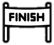
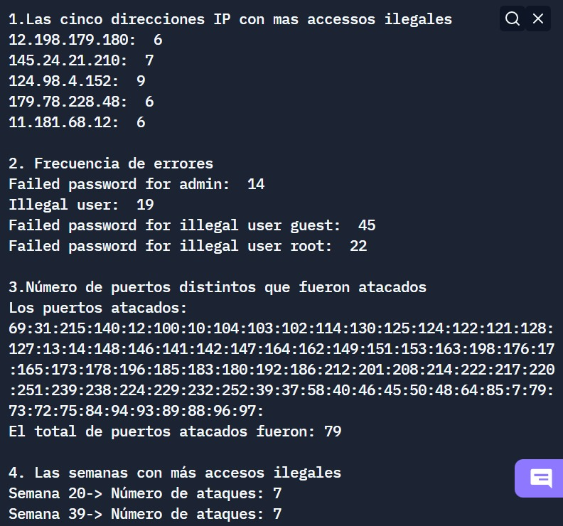
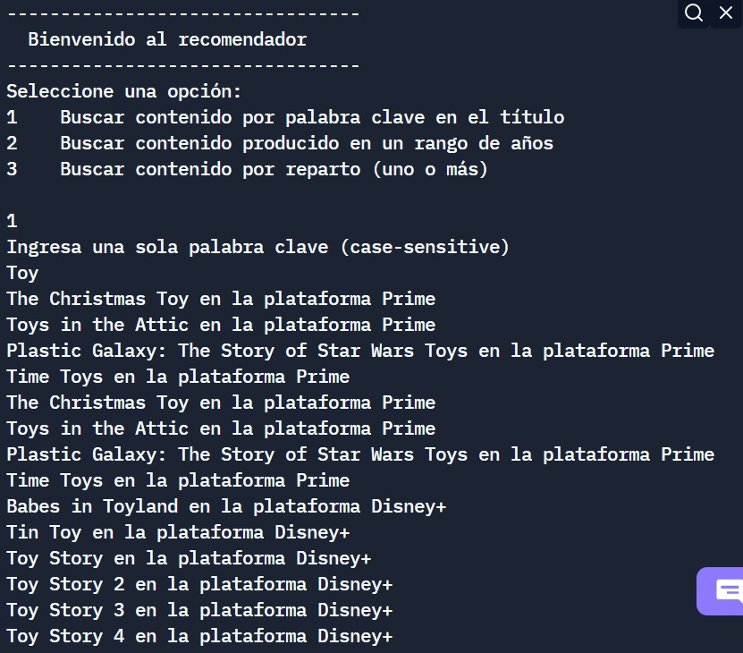
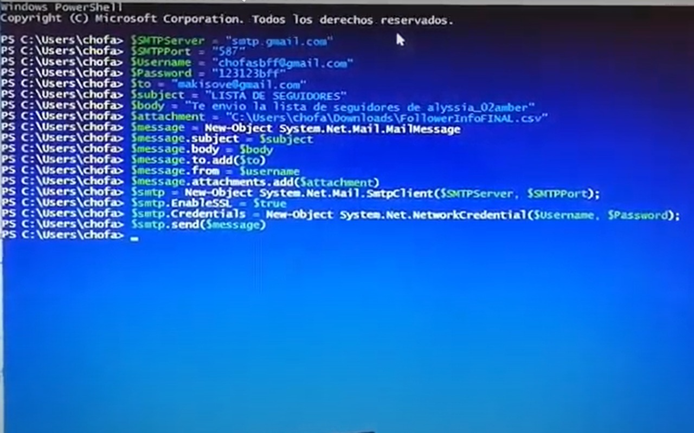

{kind=link}
{kind=link}
{kind=link}
| Contenido | Año | Plataforma |
|---|---|---|
| Dark | 2017 | Netflix |
| Interestelar | 2014 | HBO Max |
| El origen | 2010 | HBO Max |
Deportes

Automovilismo
Tenis

Fútbol
Curso el cuarto semestre de Ingeniería en Tecnologías Computacionales (ITC) en el Tecnológico de Monterrey Campus Ciudad de México.
| Lenguaje | Nivel de competencia |
|---|---|
En este proyecto se cargaron 4 bitácoras con información sobre servidores infectados y de las cuales se obtuvo las ip con más accesos ilegales, la frecuencia de errores de los servidores, el número de puertos atacados y las semanas con más accesos ilegales. Esto se logro a través del uso de estructuras de datos, tales como tabla hash, lista de adyacencia, árbol binario, fila y pila.
Para este trabajo se cargaron bitácoras con datos de las plataformas digitales y de sus respectivas películas. El recomendador lee los archivos y con la ayuda de diversas funciones busca contenido por palabra clave contenida en el título, por año de producción y por los actores que participan.
En este proyecto se recabó información pública de una cuenta de instagram a través de la programación de una placa Arduino. Dichos datos como el número de seguidores, número de publicaciones y descripción del perfil, por mencionar algunos, se guardó en un archivo csv para posteriormente ser enviado por correo. Para ver el funcionamiento completo de este proyecto, de click aquí.
Automovilismo
Tenis
Fútbol
| Contenido | Año | Plataforma |
|---|---|---|
| Dark | 2017 | Netflix |
| Interestelar | 2014 | HBO Max |
| El origen | 2010 | HBO Max |